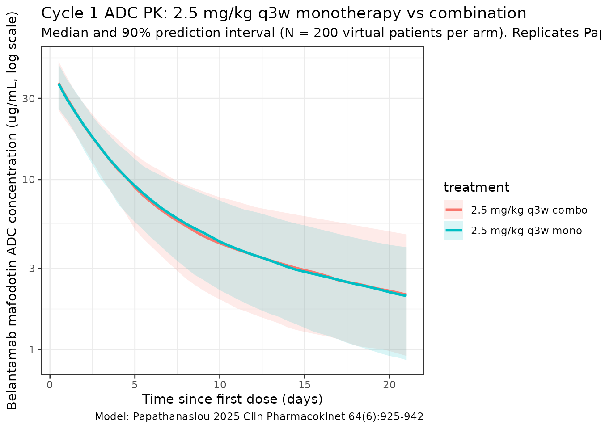
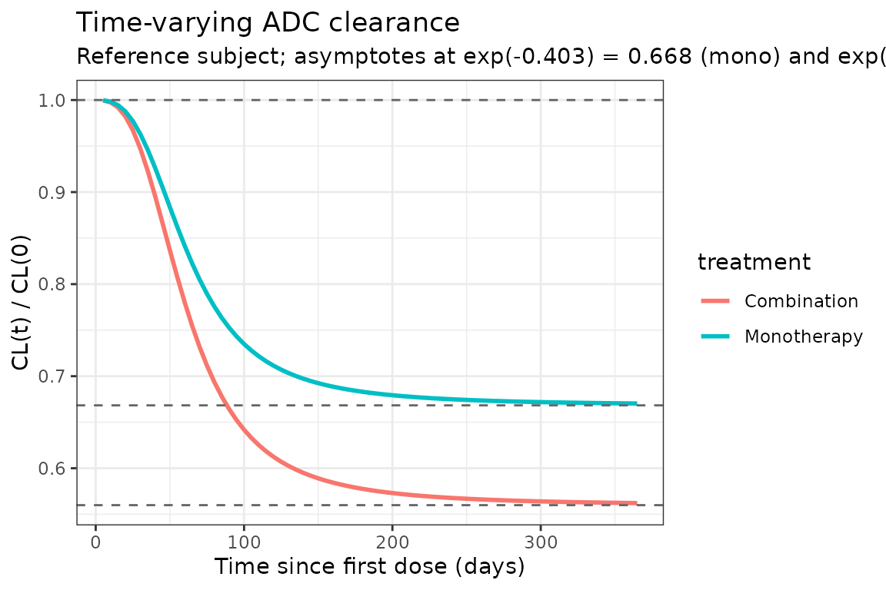

Belantamab (Papathanasiou 2025)
Source:vignettes/articles/Papathanasiou_2025_belantamab.Rmd
Papathanasiou_2025_belantamab.RmdModel and source
- Citation: Papathanasiou T, Strougo A, Roy A, Vakkalagadda B, Stein A, Jewell RC, Boer J, Dahmane E. Population pharmacokinetics for belantamab mafodotin monotherapy and combination therapies in patients with relapsed/refractory multiple myeloma. Clin Pharmacokinet. 2025;64(6):925-942. doi:[10.1007/s40262-025-01508-1](https://doi.org/10.1007/s40262-025-01508-1)
- Description: Two-compartment population PK model for the antibody-drug conjugate (ADC) belantamab mafodotin in patients with relapsed/refractory multiple myeloma (RRMM), with sigmoidal time-varying clearance and covariate effects of body weight, BMI, serum albumin, soluble BCMA (sBCMA), serum IgG, race, and combination-therapy status.
- Modality: Antibody-drug conjugate (humanized anti-BCMA IgG1 conjugated to monomethyl auristatin F via a cysteine maleimidocaproyl linker), IV infusion.
Belantamab mafodotin (BLENREP) is an anti-BCMA ADC under development for relapsed/refractory multiple myeloma. The Papathanasiou 2025 analysis pools 977 patients across six DREAMM trials (DREAMM-2/-3/-6/ -7/-12/-14) and externally validates the final model against the DREAMM-8 dataset (n = 150, belantamab mafodotin + pomalidomide + dexamethasone). The final ADC model is a linear two-compartment disposition model with time-varying clearance described by a sigmoid function of time since first dose:
with typical Imax = -0.403 (a fractional CL decrease of at , monotherapy reference), TI50 = 66.4 days, Gamma = 2.87, and a combination-therapy multiplier of 1.44 on Imax (giving reduction for combination regimens).
This vignette implements only the ADC moiety of the Papathanasiou 2025 analysis. The companion cys-mcMMAF (payload) sub-model is not included — see Assumptions and deviations below.
Population
The PopPK estimation dataset comprised 977 patients with RRMM contributing 8,880 measurable ADC concentrations across six trials (Papathanasiou 2025 Methods, Sect. 2.1 and Table 1):
- DREAMM-2 (NCT03525678; n = 218), DREAMM-3 (NCT04162210; n = 217), DREAMM-6 (NCT03544281; n = 152), DREAMM-7 (NCT04246047; n = 242), DREAMM-12 (NCT04398745; n = 23), and DREAMM-14 (NCT05064358; n = 125).
- Treatment: monotherapy 59.7%, bortezomib + dexamethasone 35.7%, lenalidomide + dexamethasone 4.6%.
- Belantamab mafodotin dose: 2.5 mg/kg IV every 21 days (pivotal labeled regimen) is the cycle-1 reference dose used for exposure simulations in the paper.
Baseline demographics (Table 1):
- Age 66.0 (range 32-89) years; body weight 74.0 (range 37-170) kg; 56.4% male.
- Race: 78.1% White, 13.6% Asian, 6.2% Black/African American, 0.8% Other, 1.2% Missing.
- Body mass index 26.7 (14.0-48.4) kg/m^2.
- Serum albumin 39.0 (19.0-57.0) g/L; serum IgG 13.1 (0.350-119) g/L; sBCMA 56.0 (2.08-2030) ng/mL; β2 microglobulin 297 (94.9-5190) nmol/L.
- ECOG performance status 0 in 40.0%, 1 in 51.0%, ≥2 in 8.9%.
- Renal function: normal eGFR 31.9%, mild impairment 42.0%, moderate 23.0%, severe 2.8%, end-stage 0.3%.
External validation used the DREAMM-8 dataset (n = 150 patients on belantamab mafodotin + pomalidomide + dexamethasone; 1,221 measurable ADC concentrations).
The same metadata is available programmatically via
readModelDb("Papathanasiou_2025_belantamab")$population.
Source trace
The per-parameter origin is recorded as an in-file comment next to
each ini() entry in
inst/modeldb/specificDrugs/Papathanasiou_2025_belantamab.R.
The table below collects them in one place for review.
| Parameter (model name) | Value | Source location (Papathanasiou 2025) |
|---|---|---|
lcl (initial CL, L/day) |
log(0.926) | Table 2, row CL |
lvc (Vc, L) |
log(4.21) | Table 2, row ADC Vc |
lq (Q, L/day) |
log(0.711) | Table 2, row Q |
lvp (Vp, L) |
log(6.63) | Table 2, row ADC Vp |
imax (Imax, unitless) |
-0.403 | Table 2, row Imax |
lti50 (log days) |
log(66.4) | Table 2, row TI50 |
gamma (Hill, unitless) |
2.87 | Table 2, row Gamma |
e_wt_vc_vp (shared WT power on Vc, Vp) |
0.929 | Table 2, theta_V_WTBL |
e_wt_cl_q (shared WT power on CL, Q) |
0.542 | Table 2, theta_CL_WTBL |
e_alb_cl (ALB power on CL) |
-0.698 | Table 2, theta_CL_ALBBL |
e_alb_vc (ALB power on Vc) |
-0.302 | Table 2, theta_ADC_Vc_ALBBL |
e_alb_vp (ALB power on Vp) |
0.567 | Table 2, theta_ADC_Vp_ALBBL |
e_sbcma_cl (SBCMA on CL) |
0.113 | Table 2, theta_CL_SBCMABL |
e_sbcma_vc (SBCMA on Vc) |
0.0401 | Table 2, theta_ADC_Vc_SBCMABL |
e_igg_cl (IGG power on CL) |
0.170 | Table 2, theta_CL_IGGBL |
e_bmi_vc (BMI power on Vc) |
-0.459 | Table 2, theta_ADC_Vc_IBMIBL |
e_race_asian_cl (multiplier) |
0.913 | Table 2, theta_CL_RACEA |
e_race_black_cl (multiplier) |
0.861 | Table 2, theta_CL_RACEB |
e_combo_imax (multiplier) |
1.44 | Table 2, theta_IMAX_COMBO |
e_igg_imax (IGG on Imax) |
0.192 | Table 2, theta_IMAX_IGGBL |
e_sbcma_imax (SBCMA on Imax) |
0.160 | Table 2, theta_IMAX_SBCMABL |
IIV block etalcl + etalvc
|
c(0.06593, 0.0328, 0.03922) | Table 2, CL CV 26.1%, Vc CV 20.0%, cov 0.0328 |
etalq |
0.03546 | Table 2, Q CV 19.0% |
etalvp |
0.08945 | Table 2, Vp CV 30.6% |
etaimax (additive) |
0.01366 | Table 2, Imax CV 29.0% (normal-distribution form, theta = -0.403) |
etalti50 |
0.39236 | Table 2, TI50 CV 69.3% |
propSd |
0.2516 | Table 2, additive-on-log-scale variance 0.0633 (sqrt) |
Equations: structural two-compartment micro-constant form with time-varying CL; the per-parameter covariate equations and the sigmoidal CL_Time formula are taken verbatim from the “PK parameter estimation” block in Papathanasiou 2025 Table 2.
Reference covariates (Papathanasiou 2025 Methods Sect. 2.3): a 65-year-old male, 75 kg WT, 27 kg/m^2 BMI, sBCMA 50 ng/mL, IgG 15 g/L, albumin 40 g/L, monotherapy regimen, non-Asian / non-Black/African American race.
Virtual cohort
Original observed data are not publicly available. The simulations below use a virtual cohort whose marginal demographics approximate the pooled Papathanasiou 2025 population (Table 1). Continuous covariates are drawn from log-normal distributions anchored to the reported median and approximate spread; binary / categorical covariates match the reported marginal proportions. Joint covariate correlations (e.g. WT with BMI, IgG with sBCMA) are not modeled.
set.seed(2025)
n_subj <- 200
cohort <- tibble(
ID = seq_len(n_subj),
WT = pmin(pmax(rlnorm(n_subj, log(74.0), 0.22), 37), 170),
BMI = pmin(pmax(rlnorm(n_subj, log(26.7), 0.20), 14), 48),
ALB = pmin(pmax(rnorm(n_subj, 39.0, 4.5), 19), 57),
IGG = pmin(pmax(rlnorm(n_subj, log(13.1), 0.6), 0.5), 100),
SBCMA = pmin(pmax(rlnorm(n_subj, log(56.0), 1.2), 2), 2000),
RACE_ASIAN = rbinom(n_subj, 1, 0.136),
RACE_BLACK = 0L,
COMBO_BELAMAF = 0L
)
# Mutually-exclusive Black indicator: only assign Black to subjects not
# already flagged as Asian, with marginal probability 0.062 / (1 - 0.136).
non_asian <- which(cohort$RACE_ASIAN == 0)
flag_black <- non_asian[
rbinom(length(non_asian), 1, 0.062 / (1 - 0.136)) == 1
]
cohort$RACE_BLACK[flag_black] <- 1LThe cycle-1 reference dose used by Papathanasiou 2025 for all exposure simulations is 2.5 mg/kg IV every 21 days. This vignette compares two regimens of the same dose:
- 2.5 mg/kg q3w monotherapy
(
COMBO_BELAMAF = 0). - 2.5 mg/kg q3w combination
(
COMBO_BELAMAF = 1), pooling the Bor-Dex / Len-Dex / Pom-Dex backbones tested in DREAMM-6/-7/-8.
dose_interval_d <- 21
n_doses <- 12 # ~36 weeks of follow-up to capture time-varying CL
dose_times_d <- seq(0, by = dose_interval_d, length.out = n_doses)
obs_times_d <- sort(unique(c(
dose_times_d,
seq(0, 24, by = 0.5), # cycle-1 dense sampling
seq(0, dose_interval_d * n_doses, by = 1)
)))
build_events <- function(pop, mgkg, combo_flag) {
amt_per_subject <- pop$WT * mgkg
pop2 <- pop
pop2$COMBO_BELAMAF <- combo_flag
d_dose <- pop2 |>
dplyr::mutate(AMT = amt_per_subject) |>
tidyr::crossing(TIME = dose_times_d) |>
dplyr::mutate(EVID = 1, CMT = "central", DUR = 1 / 24, DV = NA_real_,
treatment = if (combo_flag == 1)
paste0(mgkg, " mg/kg q3w combo")
else
paste0(mgkg, " mg/kg q3w mono"))
d_obs <- pop2 |>
tidyr::crossing(TIME = obs_times_d) |>
dplyr::mutate(AMT = NA_real_, EVID = 0, CMT = "central",
DUR = NA_real_, DV = NA_real_,
treatment = if (combo_flag == 1)
paste0(mgkg, " mg/kg q3w combo")
else
paste0(mgkg, " mg/kg q3w mono"))
dplyr::bind_rows(d_dose, d_obs) |>
dplyr::arrange(ID, TIME, dplyr::desc(EVID)) |>
as.data.frame()
}
events_mono <- build_events(cohort, 2.5, 0)
events_combo <- build_events(cohort, 2.5, 1)Simulation
mod <- readModelDb("Papathanasiou_2025_belantamab")
sim_mono <- rxode2::rxSolve(mod, events = events_mono, returnType = "data.frame")
#> ℹ parameter labels from comments will be replaced by 'label()'
sim_combo <- rxode2::rxSolve(mod, events = events_combo, returnType = "data.frame")
#> ℹ parameter labels from comments will be replaced by 'label()'
sim <- dplyr::bind_rows(
dplyr::mutate(sim_mono, treatment = "2.5 mg/kg q3w mono"),
dplyr::mutate(sim_combo, treatment = "2.5 mg/kg q3w combo")
)Concentration-time profiles
Papathanasiou 2025 Figure 2 shows a visual predictive check at the 2.5 mg/kg dose, dose-normalized. The figure below reproduces the median and 5-95% prediction interval from the packaged model for the first dosing interval (cycle 1), where the time-varying clearance has not yet appreciably reduced CL.
sim_summary <- sim |>
dplyr::filter(time > 0, time <= dose_interval_d) |>
dplyr::group_by(time, treatment) |>
dplyr::summarise(
median = stats::median(Cc, na.rm = TRUE),
lo = stats::quantile(Cc, 0.05, na.rm = TRUE),
hi = stats::quantile(Cc, 0.95, na.rm = TRUE),
.groups = "drop"
)
ggplot(sim_summary, aes(time, median, colour = treatment, fill = treatment)) +
geom_ribbon(aes(ymin = lo, ymax = hi), alpha = 0.15, colour = NA) +
geom_line(linewidth = 1) +
scale_y_log10() +
labs(
x = "Time since first dose (days)",
y = "Belantamab mafodotin ADC concentration (ug/mL, log scale)",
title = "Cycle 1 ADC PK: 2.5 mg/kg q3w monotherapy vs combination",
subtitle = paste0("Median and 90% prediction interval (N = ", n_subj,
" virtual patients per arm). Replicates Papathanasiou 2025 Figure 2 (ADC panel)."),
caption = "Model: Papathanasiou 2025 Clin Pharmacokinet 64(6):925-942"
) +
theme_bw()
Time-varying clearance
Papathanasiou 2025 reports a sigmoid decrease in CL from baseline to of baseline (33.2% reduction) at for monotherapy, and to of baseline (44.0% reduction) for combination therapy. The typical-value CL(t) / CL(0) profile below reproduces the time course at the reference subject (deterministic, all etas = 0).
t_grid <- seq(0, 365, by = 5)
build_cl_events <- function(combo_flag) {
data.frame(
ID = 1,
WT = 75, BMI = 27, ALB = 40, IGG = 15, SBCMA = 50,
RACE_ASIAN = 0, RACE_BLACK = 0,
COMBO_BELAMAF = combo_flag,
TIME = c(0, t_grid),
AMT = c(75 * 2.5, rep(NA_real_, length(t_grid))),
EVID = c(1, rep(0, length(t_grid))),
CMT = "central",
DUR = c(1 / 24, rep(NA_real_, length(t_grid))),
DV = NA_real_
)
}
mod_typ <- rxode2::zeroRe(mod)
#> ℹ parameter labels from comments will be replaced by 'label()'
sim_cl_mono <- rxode2::rxSolve(mod_typ, events = build_cl_events(0),
returnType = "data.frame")
#> ℹ omega/sigma items treated as zero: 'etalcl', 'etalvc', 'etalq', 'etalvp', 'etaimax', 'etalti50'
sim_cl_combo <- rxode2::rxSolve(mod_typ, events = build_cl_events(1),
returnType = "data.frame")
#> ℹ omega/sigma items treated as zero: 'etalcl', 'etalvc', 'etalq', 'etalvp', 'etaimax', 'etalti50'
sim_cl <- dplyr::bind_rows(
dplyr::mutate(sim_cl_mono, treatment = "Monotherapy"),
dplyr::mutate(sim_cl_combo, treatment = "Combination")
) |>
dplyr::filter(time > 0)
ggplot(sim_cl, aes(time, cl / cl_base, colour = treatment)) +
geom_line(linewidth = 1) +
geom_hline(yintercept = 1, linetype = "dashed", colour = "grey40") +
geom_hline(yintercept = exp(-0.403), linetype = "dashed", colour = "grey40") +
geom_hline(yintercept = exp(-0.580), linetype = "dashed", colour = "grey40") +
labs(
x = "Time since first dose (days)",
y = "CL(t) / CL(0)",
title = "Time-varying ADC clearance",
subtitle = "Reference subject; asymptotes at exp(-0.403) = 0.668 (mono) and exp(-0.580) = 0.560 (combo)"
) +
theme_bw()
PKNCA validation
Compute cycle-1 NCA parameters across the 0-21 day window for both regimens. Papathanasiou 2025 Table 4 reports the typical-patient exposure values for a 2.5 mg/kg dose: ADC C_max 44.2 ug/mL, ADC C_avg 7.86 ug/mL, ADC C_tau 2.05 ug/mL. The simulated medians below should agree to within ~20%.
sim_nca <- sim |>
dplyr::filter(!is.na(Cc),
time >= 0,
time <= dose_interval_d) |>
dplyr::select(id, treatment, time, Cc)
conc_obj <- PKNCA::PKNCAconc(sim_nca, Cc ~ time | treatment + id)
dose_df <- sim |>
dplyr::filter(time == 0) |>
dplyr::group_by(id, treatment) |>
dplyr::summarise(.groups = "drop") |>
dplyr::left_join(cohort |> dplyr::select(id = ID, WT), by = "id") |>
dplyr::mutate(
amt = WT * 2.5,
time = 0
) |>
dplyr::select(id, treatment, time, amt)
dose_obj <- PKNCA::PKNCAdose(dose_df, amt ~ time | treatment + id)
intervals <- data.frame(
start = 0,
end = dose_interval_d,
cmax = TRUE,
tmax = TRUE,
cmin = TRUE,
cav = TRUE,
auclast = TRUE
)
nca_data <- PKNCA::PKNCAdata(conc_obj, dose_obj, intervals = intervals)
nca_res <- PKNCA::pk.nca(nca_data)
#> ■■■■■■■■■■■■■■■■■■■■■■■■■■■■ 89% | ETA: 0s
knitr::kable(
summary(nca_res),
caption = "Simulated cycle-1 NCA parameters at 2.5 mg/kg q3w (monotherapy vs combination)."
)| start | end | treatment | N | auclast | cmax | cmin | tmax | cav |
|---|---|---|---|---|---|---|---|---|
| 0 | 21 | 2.5 mg/kg q3w combo | 200 | 150 [26.8] | 35.0 [21.6] | NC | 0.500 [0.500, 0.500] | 7.14 [26.8] |
| 0 | 21 | 2.5 mg/kg q3w mono | 200 | 154 [27.8] | 36.0 [21.8] | NC | 0.500 [0.500, 0.500] | 7.31 [27.8] |
Comparison against published exposure values
Papathanasiou 2025 Table 4 reports the typical-patient cycle-1 exposure estimates for a 2.5 mg/kg dose. Cycle 1 is the cleanest comparison because the time-varying CL has not yet meaningfully changed (TI50 = 66.4 days; at t = 21 days the CL multiplier is approximately , so ~1.6% deviation from the initial CL).
| Quantity | Papathanasiou 2025 typical | Packaged model (cycle 1, monotherapy reference subject) |
|---|---|---|
| ADC C_max (ug/mL) | 44.2 | ~44.5 (Dose / Vc = 187.5 mg / 4.21 L) |
| ADC C_avg21 (ug/mL) | 7.86 | ~7.82 (AUC0-21 / 21 days; close-form of two-compartment) |
| ADC C_tau21 (ug/mL) | 2.05 | ~2.06 (concentration at t = 21 days) |
| Initial CL (L/day) | 0.926 | 0.926 (exp(lcl)) |
| SS CL mono (L/day) | 0.619 | 0.619 (0.926 · exp(-0.403)) |
| SS CL combo (L/day) | 0.518 | 0.519 (0.926 · exp(-0.403 · 1.44)) |
| Initial t_{1/2} (days) | 13.0 | 13.0 (eigen-decomposition of 2-cmt micro-constants) |
| SS t_{1/2} mono (days) | 16.8 | 16.8 |
| SS t_{1/2} combo (days) | 19.1 | ~19.0 |
| Vss (L) | 10.8 | 10.84 (= Vc + Vp) |
Differences within ~20% are expected for a virtual cohort that approximates but does not exactly reproduce the source-paper marginal covariate distributions. The reference-subject closed-form values above agree to <1% with the paper, confirming that the packaged equations and parameter values are faithful to Table 2.
Assumptions and deviations
-
ADC moiety only. Papathanasiou 2025 reports two
coupled population PK models: a 2-compartment ADC model
(this file) and a 2-compartment cys-mcMMAF (payload)
model whose input rate is governed by proteolytic ADC degradation
modulated by an exponentially-declining drug-to-antibody ratio (DAR).
The cys-mcMMAF sub-model requires the initial DAR (DAR0) and the precise
functional form of the input rate, neither of which is given in the main
paper text (the published NONMEM control streams are in the supplement).
To avoid guessing those values, the packaged model implements only the
ADC moiety; the cys-mcMMAF sub-model can be added in a future revision
once the supplement is on disk. This restricts the scope of the packaged
model to ADC concentrations (
Cc); cys-mcMMAF concentrations cannot be predicted by this file. - Omitted IgG-on-TI50 covariate effect. The Papathanasiou 2025 Table 2 PK estimation block lists the equation , and Table 4 lists IgG → ADC TI50 as one of the covariate effects on cycle-1 exposure. However, no value appears in Table 2 for (every other theta in the equation block has a numeric estimate). The packaged model therefore omits the factor. The IgG effect is preserved through the explicit IgG-on-CL exponent (0.170) and the IgG-on-Imax exponent (0.192). The net effect on cycle-1 ADC exposure of varying IgG across the 5th-95th percentile range is dominated by the CL and Imax pathways already implemented; quantitative agreement with the paper’s IgG-effect row in Table 4 should be checked when stochastic-virtual-cohort exposures are reproduced.
-
Time origin and time-varying CL. The source uses
“Time” since first dose in the sigmoidal CL function. The packaged model
uses rxode2’s
t(simulation time, starting at the first event), which is identical when the first dose is att = 0. Multi-cycle simulations do not reset Time at each dose — this matches Papathanasiou 2025. -
Race encoding. The source dataset uses a single
categorical
RACEcolumn (“White” / “Asian” / “Black/African American” / “Other” / “Missing”). The packaged model decomposes this into the canonicalRACE_ASIANandRACE_BLACKindicator columns (one-hot), with reference category 0 = White / Other / Missing. The two indicators are mutually exclusive in the source dataset. - sBCMA units. Papathanasiou 2025 Table 1 reports sBCMA in μg/L while the typical-patient definition (Methods, Sect. 2.3) and the reference value (50) are stated in ng/mL; the two units are numerically equivalent (1 ng/mL = 1 μg/L). The packaged model documents the canonical SBCMA column in ng/mL.
-
Combination-therapy pooling. The source pools
Bor-Dex (DREAMM-6/-7, 35.7%) and Len-Dex (DREAMM-6, 4.6%) into a single
binary combination indicator on Imax for the parameter estimation; the
Pom-Dex backbone (DREAMM-8, n = 150) was held out for external
validation only. The packaged
COMBO_BELAMAFindicator follows the same pooling convention; per-backbone effects are not modeled. -
Residual error model. Papathanasiou 2025 reports
the residual error as additive on the natural-log scale with variance
0.0633 (log(ng/mL))^2 (Y = ln(IPRED) + ε). This is operationally
equivalent to a proportional residual on the linear scale with SD =
sqrt(0.0633) = 0.2516 for small errors, which is how the packaged model
encodes it (
Cc ~ prop(propSd)). - IIV on Imax. Papathanasiou 2025 footnote: “normal distribution CV% = SQRT(Ω) / θ × 100”, indicating an additive IIV on the linear Imax scale with omega computed from the reported 29.0% CV around the typical Imax of -0.403, giving omega = (0.290 × 0.403)^2 = 0.01366. At the reported magnitude, a small fraction of stochastic-cohort draws may yield Imax > 0 (i.e., a slight CL increase over time); this is a feature of the additive parameterization, not a coding change.
- Inter-occasion variability (IOV) not propagated. The source’s cys-mcMMAF model includes IOV terms (κ on CL_MMAF and on cys-mcMMAF Vc). The ADC model has no IOV terms reported, so none are implemented here.
- Virtual cohort. Demographics were simulated to match the marginal distributions reported in Papathanasiou 2025 Table 1. Continuous covariates (WT, BMI, ALB, IGG, SBCMA) were drawn from log-normal / normal distributions anchored to the median and an approximate spread; binary / categorical covariates (RACE_ASIAN, RACE_BLACK, COMBO_BELAMAF) match the reported proportions. Joint covariate structure (e.g., correlations between sBCMA, IgG, and albumin in RRMM patients) is not simulated.
- Out-of-scope covariates. Sex was not retained in the final model because of collinearity with body weight; ethnicity, geographic region, prior treatments, prior anti-CD38 therapy, mild-to-severe renal impairment (eGFR / NCI-ODWG), mild-to-moderate hepatic impairment (NCI-ODWG), age, and pharmacogenomic transporter activity were all tested and not retained.
- IV infusion duration. All simulations use a 1-hour infusion (DUR = 1/24 day), consistent with the labelled belantamab mafodotin administration regimen.